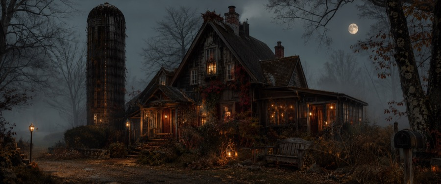
Dylan & Jill's preserved witch's-cottage and the heaviest set (64 scenes): a hidden silo reached through an armoire is the ghost-hunting HQ ("A GRAND HUSH" blackboard, crest chest, top-floor mural). Lived-in and slightly witchy — ivy, front-yard bench, lantern-lit path; Dylan's room in moss/forest green + charcoal, vintage brass, soft green glow. Hero prop: THE NECKLACE. 1690s farmhouse — 31 Crowell Rd, Sagamore Beach (LOCKED).
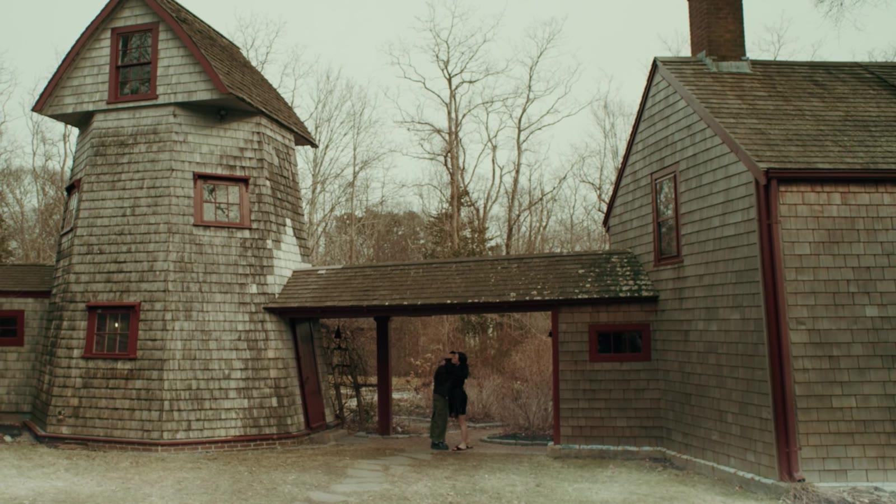
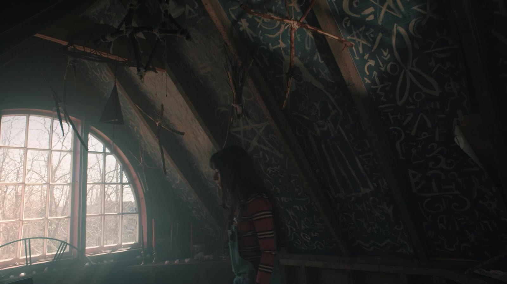

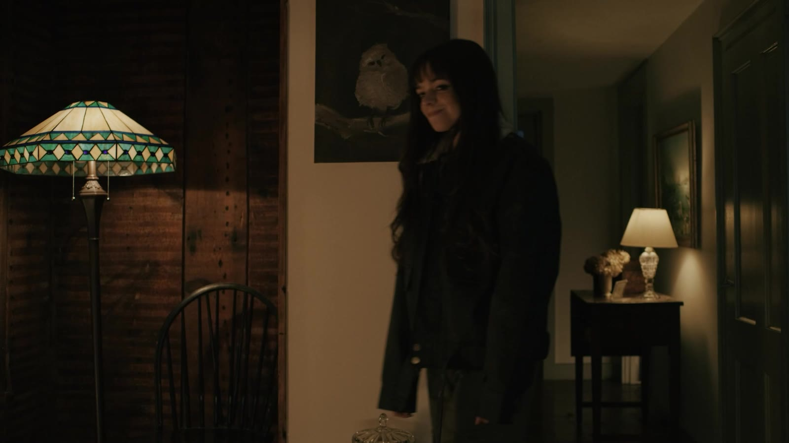
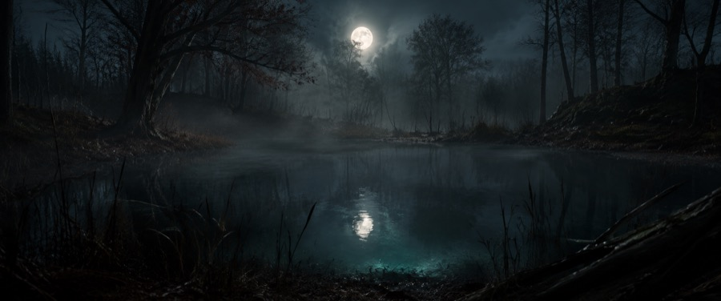
A dark pond on the town's edge where Dylan nearly drowns reaching for the book — reeds, fog, moon reflection — that should read as located behind Hell House and carries a 1692 version (Abigail, Betty & Tituba). Paired with a moonlit lighthouse beach where Mitch performs in silhouette and Candice's abandoned car — later her body — is found. Night in-water work. Options: Winter Island / Fort Pickering (Salem), Ned's Point (Mattapoisett), Myles Standish ponds.
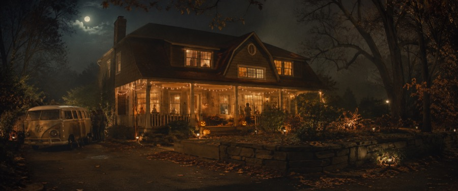
Dakota & Harlow's house — the classic small-town house-party spot, leaning vibey/boho: 70s terracotta/mustard/olive, macramé, hippie & lava lamps, an in-ground POOL for the night pool-party flashback, porch pumpkins, and HARLOW'S 1970s hippy van out front. Options: 18 Hardy St Danvers, Woburn Victorian ($120/hr), Beverly/Peabody pool homes.
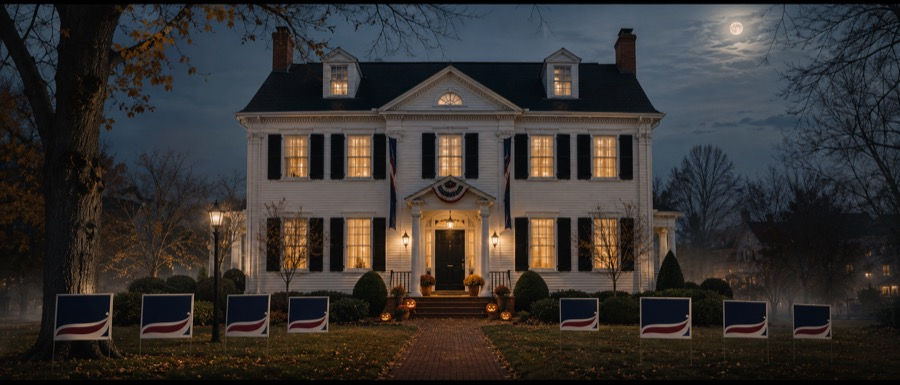
The put-together colonial — mom Morgan is the mayor, so this is the most "proper New England" house: black shutters, curved staircase, pumpkins on the steps, and TEN "VOTE MORGAN HALL FOR MAYOR… AGAIN!" signs on the lawn. Distinct teen rooms inside — Sawyer muted olive/rust artsy, Parker clean navy/red jock; Morgan's navy/cream/red study can double as her mayor's office. Options: Applefield (Ipswich), Solomon Holt (Andover), Waldron St (Marblehead).
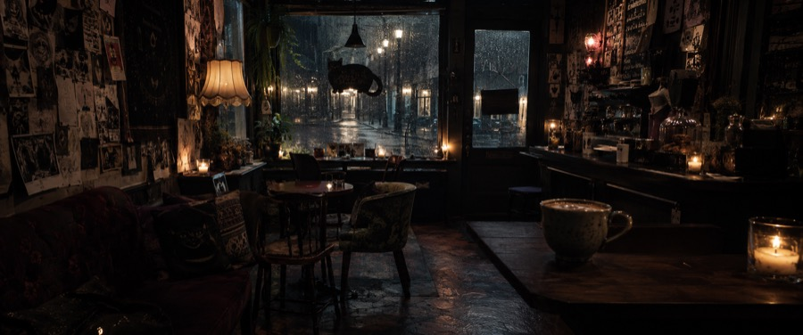
Veda's tiny, near-empty café — an extension of Veda herself: dark, punk-witchy, cozy on the surface, defiant underneath. Hand-scrawled signage with attitude, black-cat & tarot touches, thrifted mismatched furniture, candle + low warm light, riot-grrrl zines, a CLOSED sign she flips, chai on the counter — near-empty because she doesn't let just anyone in. Top pick: Blackcraft Coffee, Salem (a witch-brand café that rents). Alts: Gulu-Gulu, Atomic.
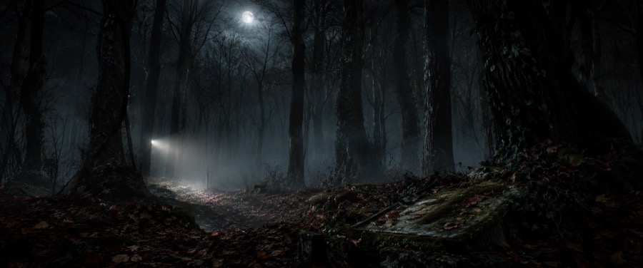
An eerie, fog-walled forest on the town edge where the kids get lost — bare trees, harvest moon, flashlight beams, a mossy ivy grave slab (Good Crest). Later the site of a night shooting + police search (bullet holes in trees, a bear trap, a buried box of VHS tapes). The pilot cheated the school grounds as the woods — likely reuse. Options: Bradley Palmer / Willowdale (Topsfield), Endicott Park (Danvers), Myles Standish (South Shore).
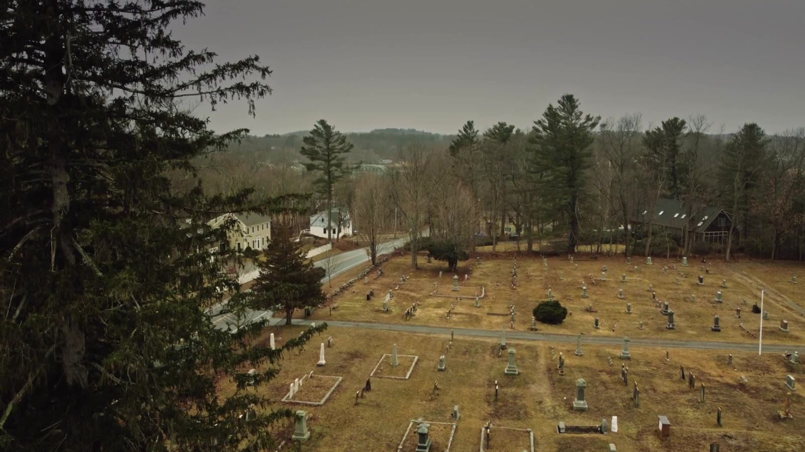
The working graveyard where Mitch digs — autumn ivy, harvest-lit epitaphs, incense, a gravedigger's house behind. Grave-digging is a recurring romance motif (they kiss in an open grave), so it needs a practical, dressable open-grave setup, a shovel, and the pilot's lantern. Pilot's is on Verlice (✓ shot); this covers extra beats. Options: Rebecca Nurse Homestead, old Salem/Danvers burying grounds.
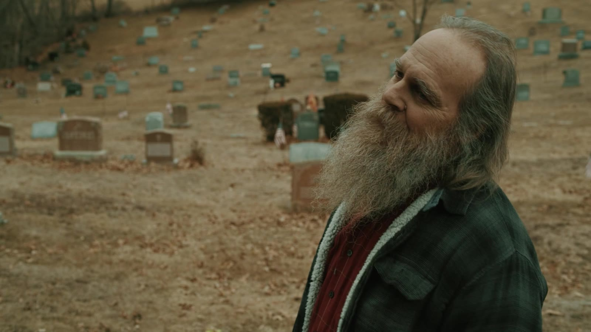
ONE living-history / colonial village to service ALL the Salem sub-areas in a single package — historical accuracy is paramount (no modern intrusion in frame): Parris nursery, Mary's Bath 1692, a jail cell, Ipswich prison + Proctor's Ledge. Raw timber, rushlight, cold stone, breath in the air. Best: Rebecca Nurse Homestead (real 1692 site + meetinghouse), the Witch House, Old Ship Church (Hingham, oldest surviving meetinghouse), Old Sturbridge Village.
A gorgeous stained-glass church hosting the Fall Festival — tents, ticket booths, a pumpkin patch, a water-gun tent (grounds only; warm priest). Pitch UU/UCC/Episcopal: Northshore UU (Danvers), First Church Wenham, Topsfield Congregational, and the lead — First Congregational "Old Sloop" (Rockport). Pumpkin-patch grounds: Connors/Smolak Farms.
Fluorescent limbo — Candice's coma room (machine glow), waiting-room halls, a warmer cafeteria, plus a harsh ER entrance (sliding doors, ambulance bay, red sign). Consolidate the wards + ER + Psych Ward to limit company moves. Best: Tewksbury State Hospital (was 'Juniper Hills' in Castle Rock), Medfield State (Shutter Island asylum), South Shore Sim Lab (clean modern ER for close-ups).
A Chicago-linked psych facility — lab, lobby, and a padded cell holding Nathan (Dylan's father). Play the lucid-man-in-a-mad-place tension, not generic asylum horror; dress the Chicago smuggling rig (cans hiding codeine, whiteboard with Nathan's photo). Best: Medfield State (best-in-class asylum interior), Tewksbury State (already played a psych hospital). Build fallback: New England Studios, Devens.
A timeworn New England townie diner — Twin Peaks' Double R × Hopper's "Nighthawks": a warm, near-empty refuge on a wet dark street. Aged formica + stools, cracked ox-blood/teal vinyl booths, pie case, old jukebox, buzzing vintage neon, rain on the glass; a hostess-area public phone (Dylan calls Mitch). Best: Agawam Diner (Rowley, 1954 Fodero — definitive), Salem Diner (1941 Streamliner), Capitol (Lynn), Portside (Danvers), Mill Pond (Wareham).
An open-air night gig in a full downpour + thunder (Ep 106) — DIY rock energy, string lights, a failing tarp, wet neon; Sawyer & Veda perform. Stage + backstage. Top pick: the Take-Out Terrace Truss & Stage — a real black-steel truss stage in downtown Ipswich, 4 Union St, on the Riverwalk right beside the river and the historic mural, ringed by old downtown buildings (hosts Downtown Tuesdays concerts + the Illumination river festival; town-owned, free to reserve). Alts: Notch Brewing biergarten (Salem), Narrows Center (Fall River), Backbeat (Beverly), Newburyport Brewing.
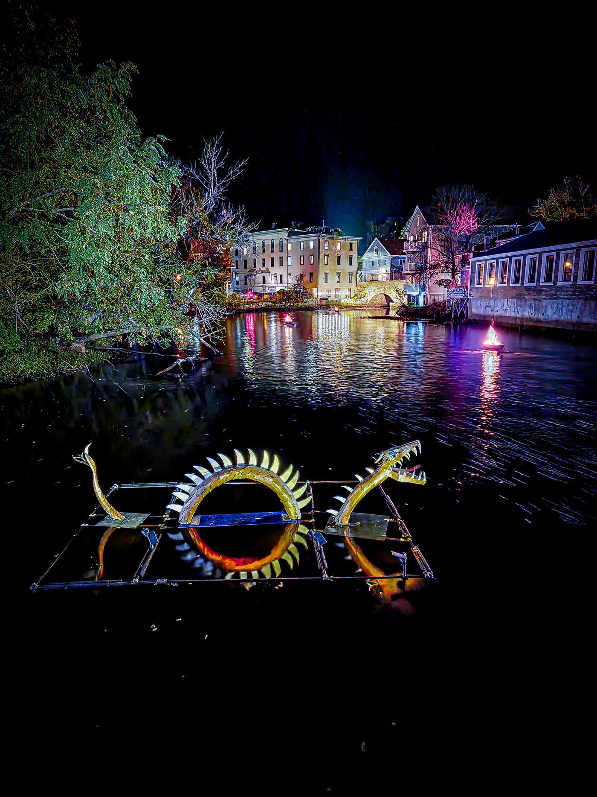
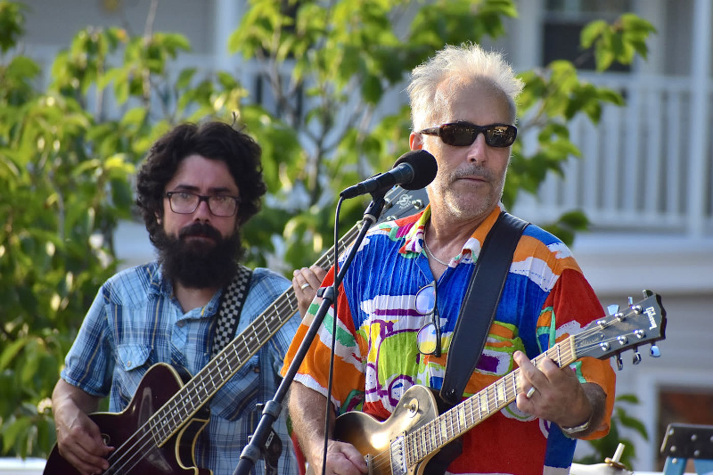
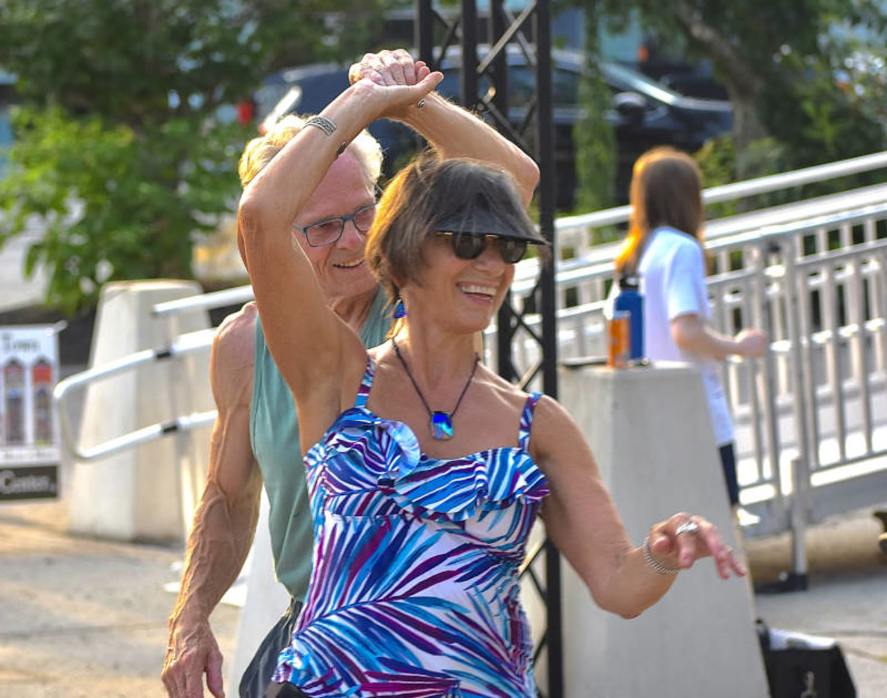
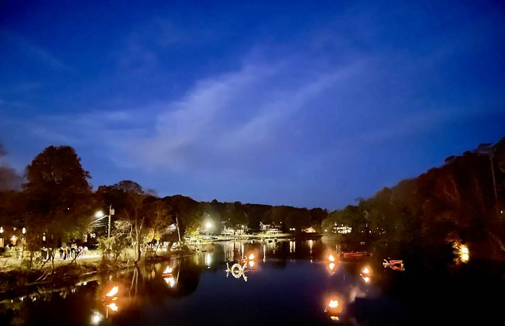
Bright, glossy retail normalcy — fluorescents, pinks, mirrors: a deliberate un-haunted palate-cleanser flashback (Ep 4) and the commercial counterpoint to Black Willow. Best: Moon Baby (Salem), Andrew Michaels (Salem, 1912 building — most cinematic), Sally Beauty (the aisle; corporate sign-off).
The Mayor's civic office — dark wood, US + MA flags, the seal, campaign signage; navy/cream/red. Best double: the Hall Residence home study (it's the mayor's own house, so Sawyer's drop-in plays naturally) — set-dressing only. Real municipal rooms: New Bedford City Hall (1856 grand suite + film office), Salem City Hall (1837), Gloucester City Hall (Second Empire), Abbot Hall (Marblehead).
The school's bulletin stage / a local-TV news set. Best: PEG studios that rent facilities + crew — SATV (Salem), BevCam (Beverly), PACTV (Plymouth), 1623 Studios (Gloucester).
Bench (ext) + courtroom (int) — "est. 1693" — low priority, possible cut, so hold before sourcing. Best: Bristol County Superior New Bedford (the 1893 Lizzie Borden courtroom), old Essex courthouses (Salem, decommissioned), Essex Superior (Newburyport, 1805 Bulfinch), 1749 Court House Museum (Plymouth).
Crowd-scene town green for Black Willow (EST. 1693 — self-branded "quite haunted and quite boring," permanent autumn). Best: Salem Common (⚠ avoid Oct crowds), Ipswich South Green, Newburyport Market Square, Wenham/Hamilton commons, Plymouth Town Square.
Old-school New England station — PD lobby + Chief Hodge's office (a room inside, case files splayed on the desk) + evidence room; hero prop is the stamped FILE "CASE AGAINST MICHAEL HUGH…". Real booking areas rarely allow filming → shoot lobbies/exteriors + build the interior. Options: Salem/Danvers/Beverly/Newburyport PD; Plymouth/New Bedford.
A real kids' playground that reads creepy at night — empty swings, still equipment, fog, sodium-light pools (Mitch & Dylan in blanket "ghost" costumes); plus an abandoned parking lot posing as an orchard with a rusted carousel. Best: Endicott Park (Danvers, at base), Stage Fort Park (Gloucester, 10pm ordinance), Salem Willows / Kiddieland (faded-Americana amusement park).
A crooked, ivy-covered fortune-teller cottage at the end of a gravel path — "MADAME ZUGASTI", troll dolls everywhere, many locks + a peephole: the show's whimsy side (Coraline/Burton). Also the on-screen Halloween→Christmas crossover. Best: Bunny Cottage (Annisquam), pre-dressed witch cottages in Salem (Salty Witches / Creaky Cauldron), Rockport/Onset shingled cottages.
Open fields + a tree-lined night road — the connective driving beats for Black Willow. Best: Appleton Farms (Ipswich), Crane Estate / Argilla Rd (field + road + estate in one), World's End (Hingham), Myles Standish gated forest roads.
The school's Halloween dance — whimsical goth, OVER THE TOP: stage + real backstage, a grand staircase, a fog machine, and a CONFETTI CANNON of black paper hearts. Inside vs outside decided once the school locks. Best: Salem Columbus Club (250-seat, big stage + wings), Gloucester Elks (ocean-view ballroom), A.P. Gardner American Legion (S. Hamilton).
A Boston walk-and-talk + the road-trip lodging — make it a rented Airbnb HOUSE (bedroom + exterior), not a city apartment (Ep 106). Sidewalks: Beacon Hill (Charles/Acorn), North End (Hanover), Back Bay (Comm Ave Mall). Interior: film-cleared brownstone/house STRs.
A cluster of everyday present-day homes cheated inside 1–2 modest single-families near each base: Carrie's ALL-PINK Landry house (glossy blush, Hollywood-vanity bulbs); adult Sandra's faded Boston winter home (dusty rose/cream/sage, tea service); Hodge (bathroom interior only — the killer's-mask reveal); Ms. Marrero's bookish teacher's home (warm lamplight, stacked books). Options: Rockcleft (Marblehead), the Rowley Peerspace home.